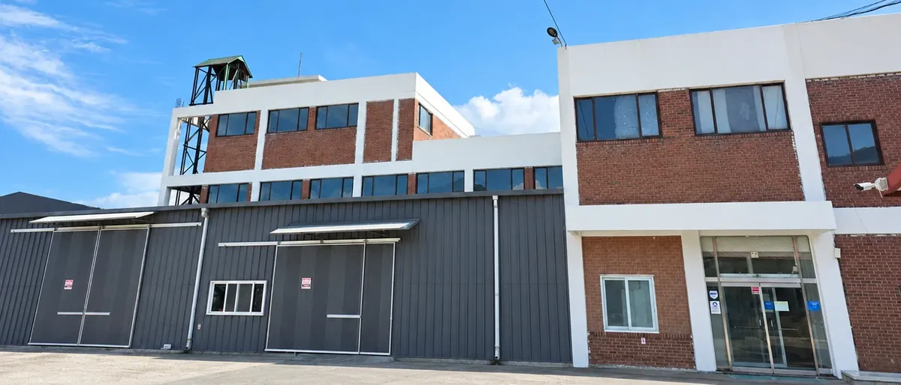
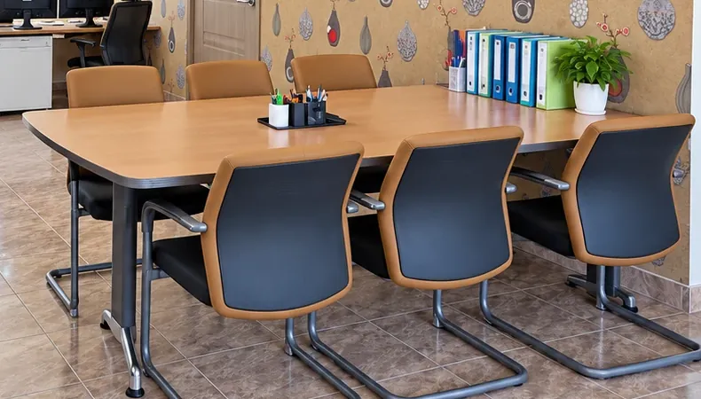

회사소개
알찬식품은 경기도 포천시 화현면에서 두부를 만드는 회사입니다. 자사 브랜드 알찬두부와 함께 다른 브랜드의 두부도 OEM으로 생산합니다.


회사 개요
- 상호
- 알찬식품
- 대표
- 민복기
- 소재지
- 경기도 포천시 화현면 봉화로581번길 39-29
- 하는 일
- 두부 제조, OEM 생산
- 특허 등록
- 2003년 「두부의 제조방법」(제0374845호)
- 주요 제품
- 3kg 조각두부, 알찬두부, 알찬 고소한 순두부
- 납품 분야
- 급식, 외식 프랜차이즈, 식자재 유통
두부 납품과 OEM 생산 문의는 전화로 받습니다.
납품 문의